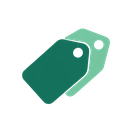
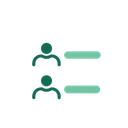
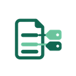
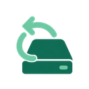

Gurumoji アイコン確認
アプリに取り込んだ126点（png-128）と、画面での配置です。画面では約24〜34pxで表示されます。
画面に配置したアイコン（22点・28か所）
01-transcription上部ナビ「新規作成」／サイドバー「文字起こし」109-project上部ナビ「データ」21-statistics上部ナビ「分析」055-speaker-profile上部ナビ「事前データ」／AIエフォート「話者名を確認」30-settings歯車（通常設定）／実行設定の見出し／サイドバー「一般」08-speaker-identificationサイドバー「話者分離」／カード「事前 話者情報」040-noise-reductionサイドバー「音声処理」28-exportサイドバー「出力形式」112-saveサイドバー「保存先」23-visualizationサイドバー「表示」115-syncサイドバー「接続」04-video-import「ファイル選択」ボタン111-project-open保存先フォルダー欄031-play実行ボタン073-keywordカード「単語登録」15-outlineカード「事前アウトライン」／AIエフォート「アウトライン」06-transcript-editタイル「AI仕上げ」／AIエフォート「文章の仕上げ」036-volumeタイル「音量調節」125-agent-statusタイル「モデル」20-emotionタイル「感情解析」084-read-completeAIエフォート「話者を再確認」03-audio-import複数登録リストの音声ファイルすべてのアイコン（126点）
01-transcription使用中02-recording03-audio-import使用中04-video-import使用中05-live-transcription06-transcript-edit使用中07-speaker08-speaker-identification使用中09-group-interview10-meeting11-casual-chat12-timeline13-search
14-labels15-outline使用中16-summary17-evidence-quote18-themes19-comparison20-emotion使用中21-statistics使用中22-correlation23-visualization使用中24-expert-analysis25-workflow26-progress27-history28-export使用中29-knowledge30-settings使用中031-play使用中032-pause033-stop034-rewind035-fast-forward036-volume使用中037-mute038-headphones039-microphone-off040-noise-reduction使用中041-trim-audio042-merge-audio043-split-audio044-playback-speed045-bookmark046-timestamp047-subtitles048-frame-capture049-waveform050-recording-schedule051-speaker-add052-speaker-edit053-speaker-merge054-speaker-split055-speaker-profile使用中056-speaker-unknown057-speaker-turn
058-participant-list059-speaker-colors060-speaking-time061-speaking-balance062-overlap-speech063-silence064-turn-taking065-conversation-start066-conversation-end067-question068-answer069-agreement070-disagreement071-topic-change072-group-compare073-keyword使用中074-word-frequency075-co-occurrence076-codebook
077-coding078-category079-theme-map080-supporting-evidence081-counter-evidence082-alternative-view083-unread084-read-complete使用中085-missing-data086-coverage087-confidence088-human-review089-review-pending090-approved091-rejected092-warning093-error094-information095-filter096-sort097-histogram098-boxplot099-line-chart100-pie-chart101-heatmap102-cross-table103-mean104-median105-variance106-sample-size107-hypothesis108-statistical-test109-project使用中110-project-new111-project-open使用中112-save使用中113-backup
114-restore115-sync使用中116-local-storage117-cloud-storage118-privacy119-lock120-file-json121-file-csv122-file-document123-slides124-knowledge-link125-agent-status使用中126-help